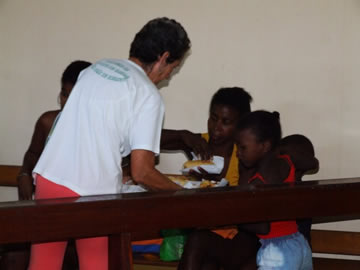

Integrantes do Grupo SIA participam de trabalhos sociais da região onde moram.
A Ação Social que aconteceu no dia 08 de Dezembro de 2008 na Pastoral da criança do Bairro Centenário teve a intenção de proporcionar um final de ano melhor para as crianças carentes da região. Se deseja manter um contato com o projeto, mande um email para Alexandre Mattos.
|  | |
'Você também pode fazer a sua parte, não só no Natal, mas o ano inteiro.' - Alexandre Mattos.